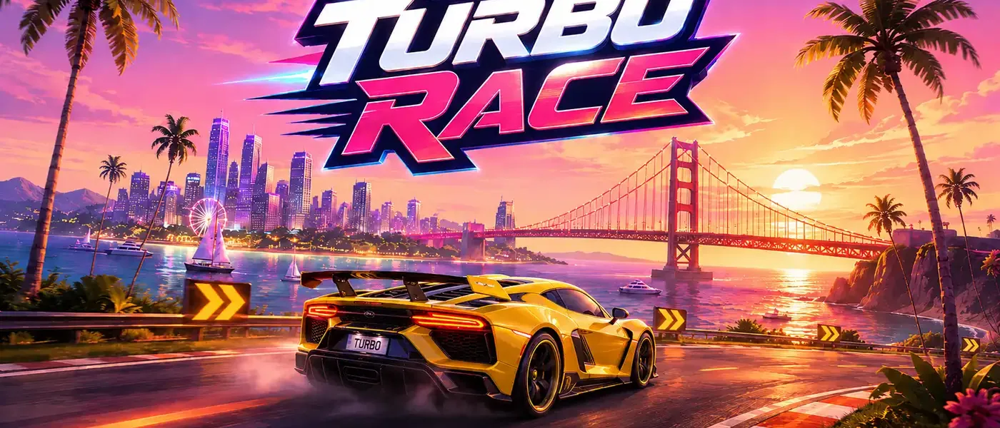
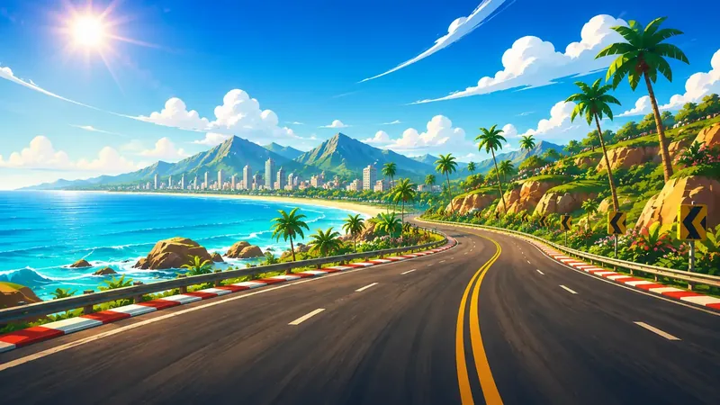

Turbo Race
Corrida em perspectiva no estilo dos clássicos de 16 bits, com a pista correndo em direção ao horizonte. São 28 fases divididas entre Brasil, Estados Unidos, Japão e Itália — cada país com sua trilha, seu cenário e seu vídeo de encerramento.

O que tem no jogo
- Garagem — melhore motor, tanque e estabilidade com as moedas da pista.
- Três controles — toque nas laterais, botões na tela ou sensor de inclinação. Também aceita controle externo por Bluetooth ou USB.
- Turbo, farol e itens — gás extra, congelar rivais e modo fantasma.
- Multiplayer local — corra contra amigos por Bluetooth, sem internet.
- Clima e horário — chuva, noite e neblina mudam a pilotagem.

Capturas
Toque numa imagem para ver em tamanho grande.
Precisa de ajuda?
Escreva para arleyadm@gmail.com. Se for um problema no jogo, conte qual aparelho você usa e em que fase aconteceu — isso ajuda a achar a causa bem mais rápido.
← Todos os jogos